CHICKEN HOUSE / REAL GAME CAPTURES
ASCENSION v9
異なる形のA〜Dを抜け、カーソルで狙う30秒の宇宙戦からワープ、そしてレストランへ。
実ゲーム／ブラウザー出力。3D部分はWebGLで、デバッグ準備・固定時刻の撮影を含みます。画像生成AIの理想図、手動完走やスマホ実機の証明ではありません。
実装・試行条件・検証報告 · 通常サイトへ形の違う4区画

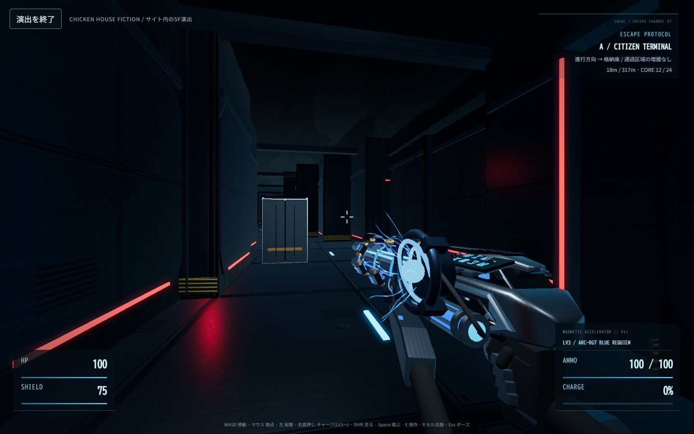

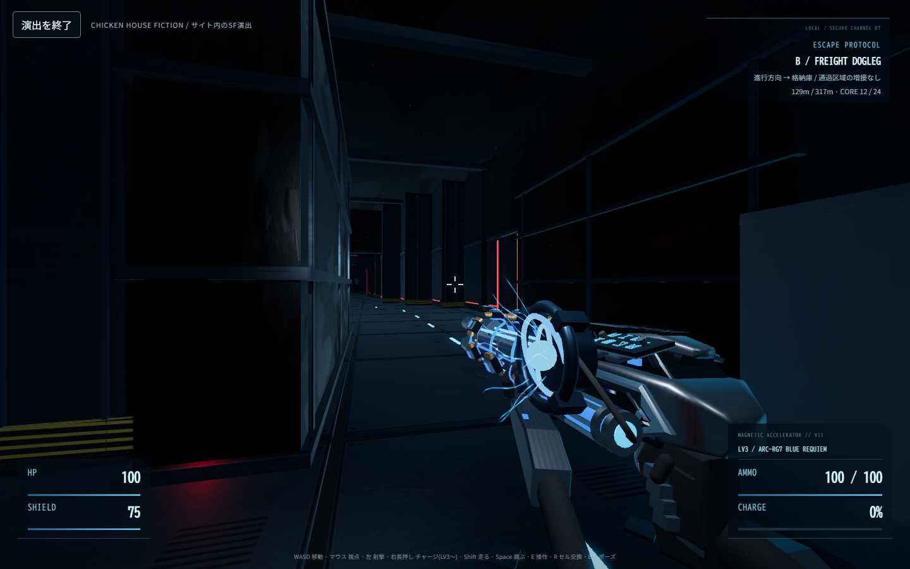

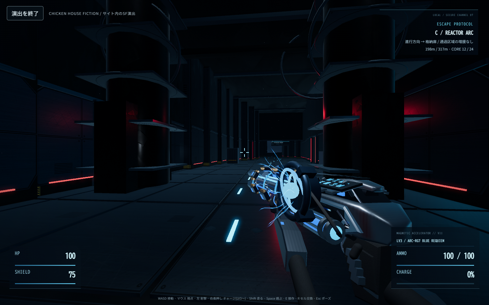

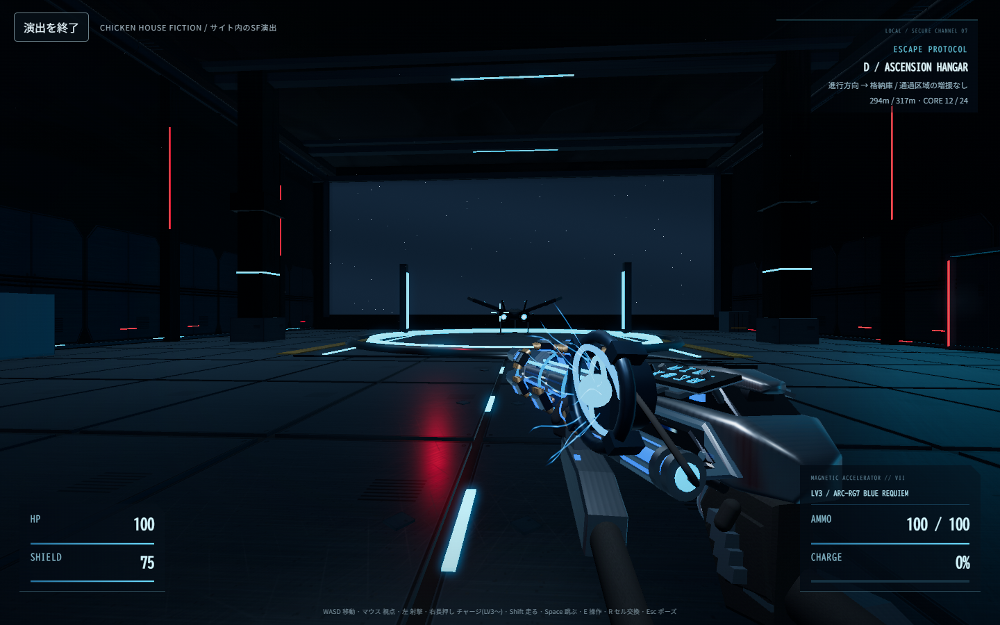
見やすい敵と宇宙脱出

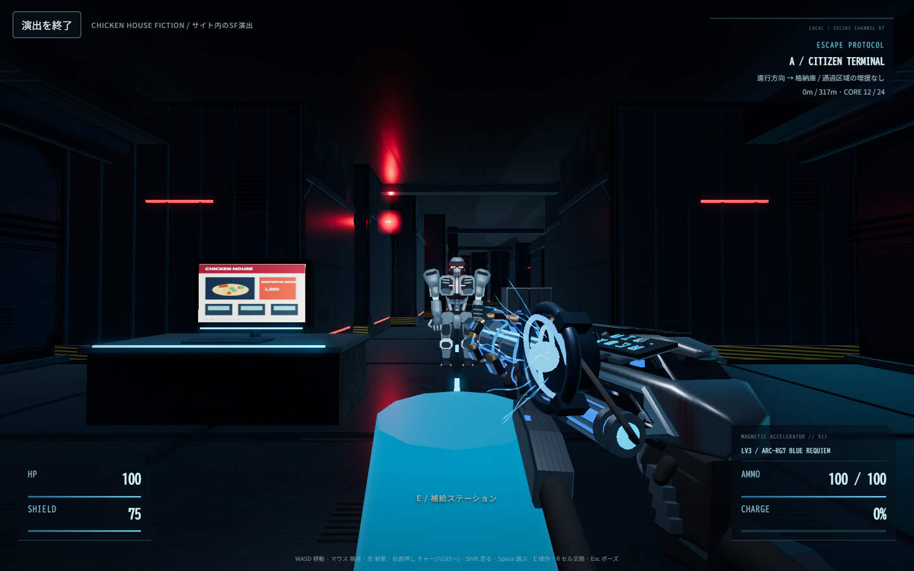

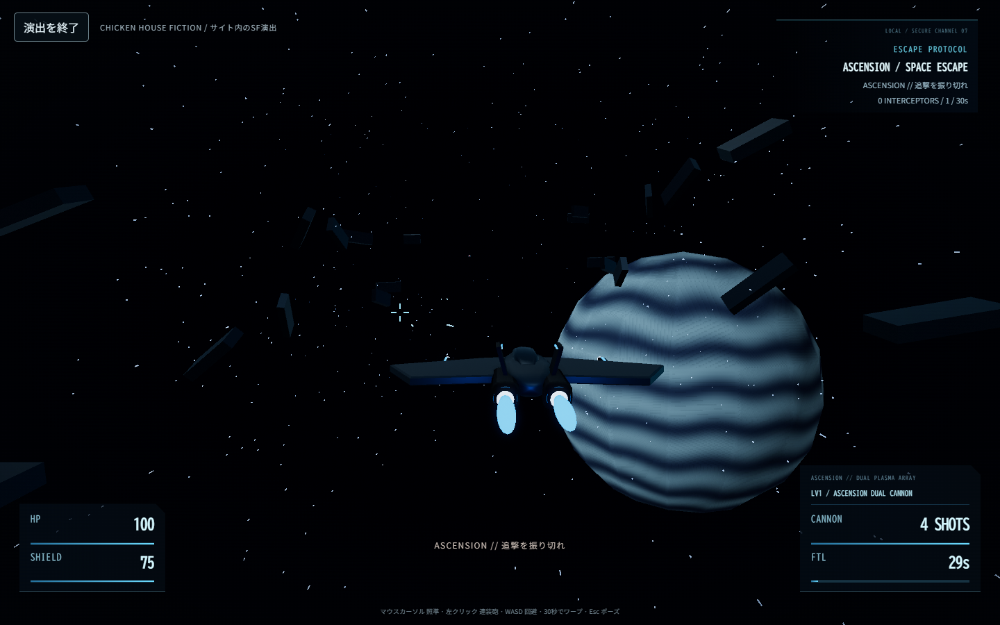

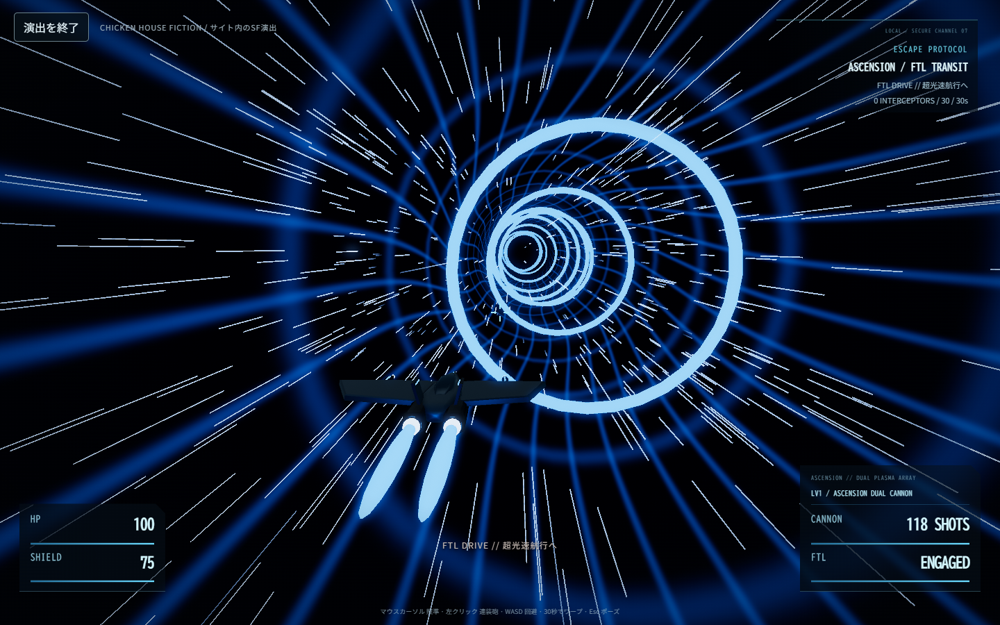

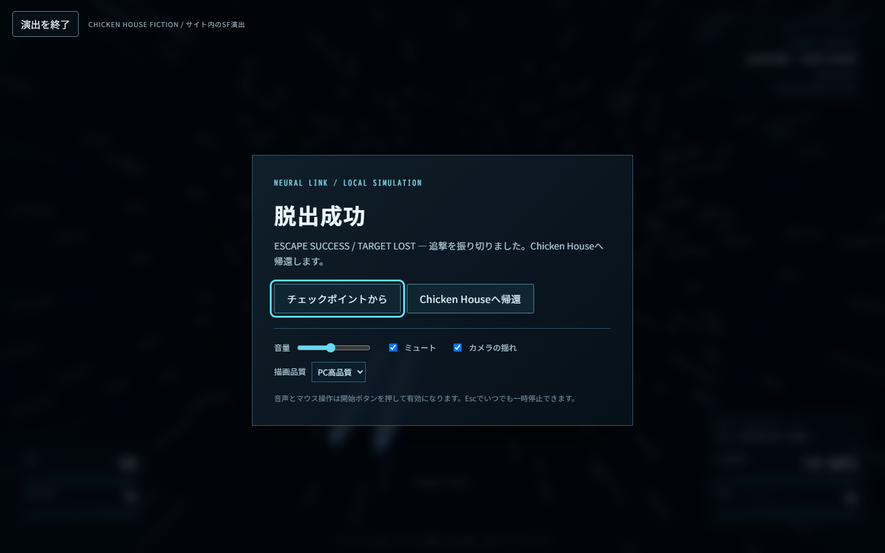

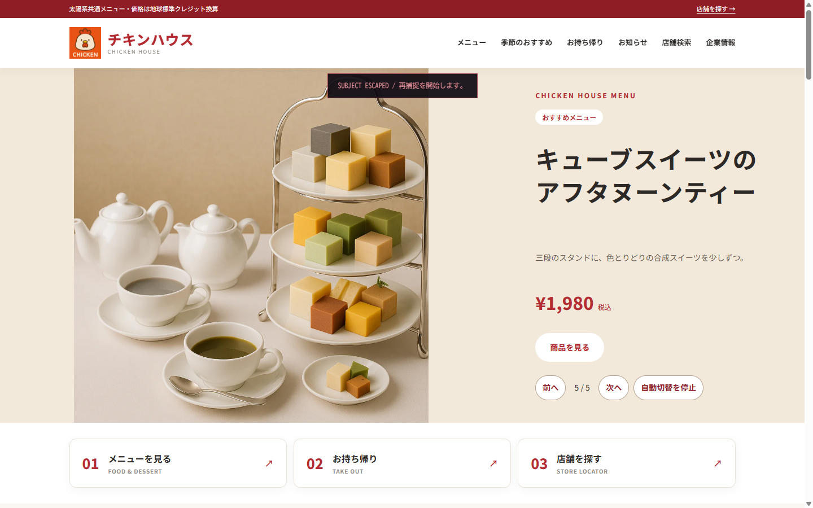
操作と帰還の録画
約21秒・無音。撮影用の区画移動と時計の早送りを含むQA録画です。通常速度の完走映像ではありません。
遠距離の敵
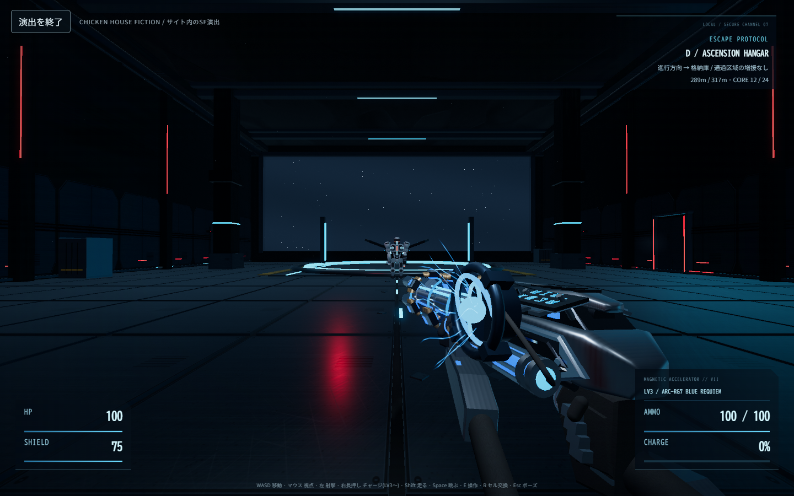
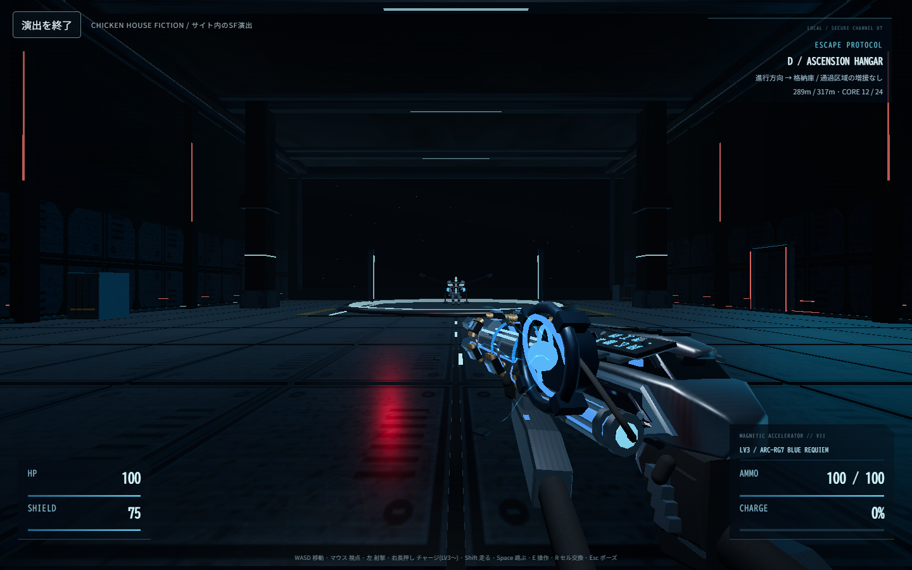